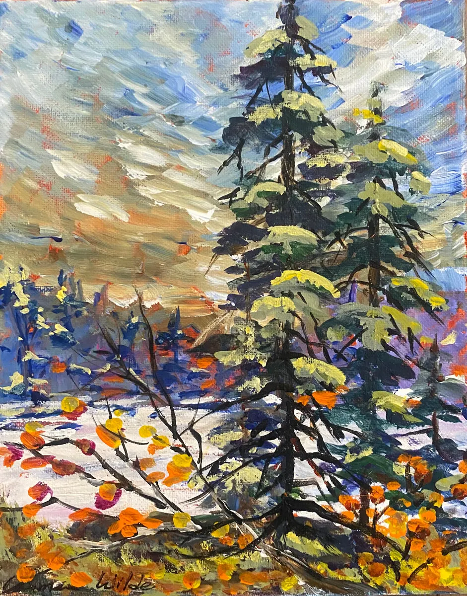

← Mini paintings
mini 21 Jasper
CAD $80.00
Mini 21 I washed my little canvas with Quinacridone/Nickel Azo Gold which allows this wonderful shade to come through background plus I just love this color!
Availability and final price are confirmed through Carmen’s current store. Artwork may have sold.